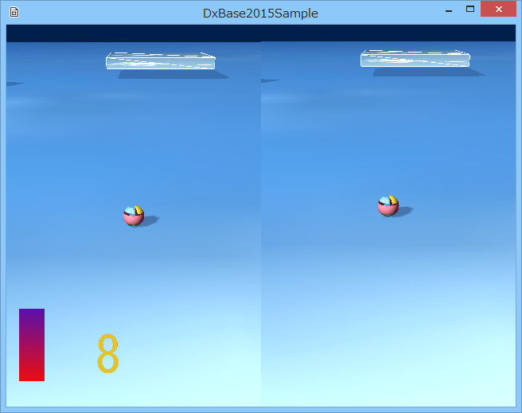

図3004a
左右の分割された画面は前項どおりです。問題は、左下のスプライトです。これは、ゲーム全体で1式しかありません。
void ChildGameStage::CreateViews(){
//最初にデフォルトのレンダリングターゲット類を作成する
CreateDefaultRenderTargets();
//マルチビューコンポーネントの取得
auto PtrMultiView = GetComponent<MultiView>();
//マルチビューにビューの追加
auto PtrView = PtrMultiView->AddView();
//ビューの矩形を設定
Rect2D<float> rect(0, 0, (float)640, (float)480);
//0番目のビューにパラメータの設定
PtrView->ResetParamaters<Camera, MultiLight>(rect,
Color4(0.0f, 0.0f, 0.0f, 0.0f), 1, 0.0f, 0.2f);
auto PtrCamera = PtrView->GetCamera();
PtrCamera->SetEye(Vector3(0.0f,0.0f, -10.0f));
PtrCamera->SetAt(Vector3(0.0f, 0.0f, 0.0f));
}
void GameStage::Create(){
try{
//中略
//子供ステージの作成
AddChileStage<ChildGameStage>();
}
catch (...){
throw;
}
}